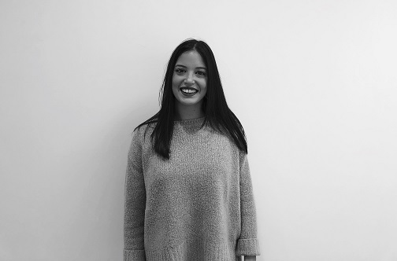
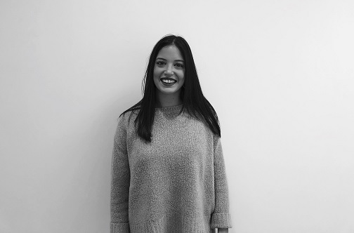
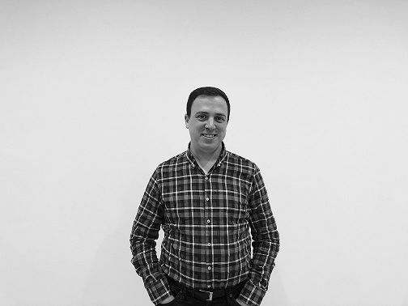
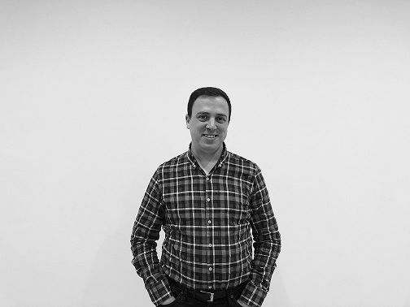
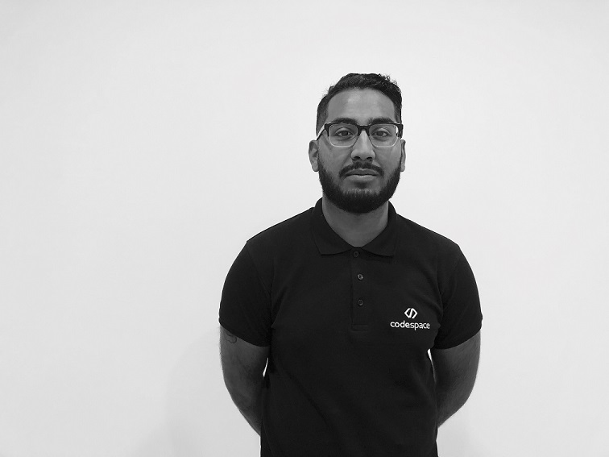
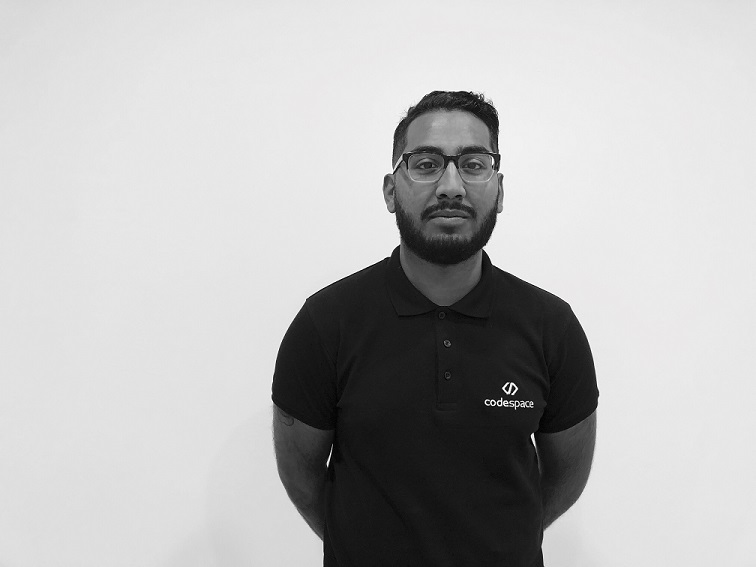

We are a multidisciplinary working group, formed by professionals with extensive experience in the technology sector. At Codespace, we want to impart our passion for technology and all that it implies, perseverance and communication, to our clients/friends. Our commitment to our clients and the constant dynamism in our work guarantees satisfaction and efficiency from our services.
We have formed an excellent team, which is the best endorsement to present our assurance in ourselves and confirm that our performance is among the best in the technology industry.
Codespace is a factory of professionals in the IT industry and we provide services to companies as well as individuals.
We adapt to a changing market, constantly evolving and offering our knowledge, professionalism, and our services in accordance with permanent technological progress.
With over 30 years of experience and more than 400 employees, we have the know-how and support of the business group to which we belong.

About us
What it means to be a codespacer
Who are we?
The Campus
We have collaborative spaces, a cafeteria, conference area, and classrooms equipped with Smart kapp iQ 75” interactive panels. We have outfitted our spaces with the most powerful computing equipment on the market, fit for the performance required for the advanced training we provide, with the following specifications:
Our furniture and decoration reflect our taste for excellence, where we pay attention to every small detail as we do with our training. Our campus is a coworking environment that fosters good relations and a team spirit among our staff and students.
our team


Josema Ezquerra
CEO
Expert in systems, networks, and security administration. Programmer and teacher with more that 15 years of experience. Entrepreneur and manager of team harmony. He saw the Internet being born and the cloud adopted him.
Cinema, cinema, and cinema!
Lover of gastronomy and travel in good company. Listen, read, and write. Workmaniac!!

Jair Lozano
Business Development Manager
International professional with extensive experience in European companies. Marketing, business, ecommerce, languages. Provides us with solutions in nano seconds. And always with a smile on her face!!
Yogi, globetrotter, and creative. Gadgetmaniac, in love with the IOT.
A flight is always waiting for her. Since she loves avocados, she never wants to leave Malaga. Her oil paintings will end up at Sotheby’s. .

José Francisco Vargas
Full stack web developer
Full stack web programmer and tester. He has participated in several projects, some on an international scale. Javascript, Jquery, PHP, Android, and C#, he is versed in agile methodologies. There is no language that he can’t learn!!
Drummer, lover of heavy metal, spots, television series, and videogames. If he’s not on stage, you’ll see him below it, at concerts and festivals, always with a beer in his hand!
 

Claudia Reyes
front desk service
Graduated in Labor Relations and Human Resources, her level of responsibility makes her be demanding in all aspects of her life, organization and order is a way of life.
A place for everything and everything in its place.
Healthy and athletic, a fan of the kitchen, specifically food, she loves to travel and is always looking to travel to see new places or try new food.
She loves the beach and could not live far from the sun and the coast.


Jonas Brandel
real life programming advisor
A professional with 18 years of experience at Microsoft as Senior Software Developer in Redmon and Dublin. CEO and founder of several technology companies.
Organizer of diverse programming communities and entrepreneurship programs
A father, he loves his family and photography. Repairing things, many things. When he is not repairing something, he is behind the camera. He is also a big fan of carpentry.


Alberto Sainz
real life programming advisor
Entrepreneur, facing new challenges in the software development sector. Passionate about agile methodologies. Always willing to pass on his experience and knowledge, acquired through a long career as a developer and software analyst.
Learning and teacher are his motivations.
A great friend, he is always ready for a “little bit” of sport, be it paddle, biking, climbing... He loves to enjoy our climate and gastronomy. He likes almost all kind of music, travelling, and reading, so as not to lose the habit.
Juan Gabriel Gomila
Mathematician for real life coding
A mathematician by profession, he is also a programmer, game designer, and, as a hobby, a data scientist. After 3 years of working for PlaySpace, a social videogame company, he started his own company, Frogames, where he combines the creation of apps and games with his passion for teaching. He has positioned himself as the top instructor in Spanish with more that 30,000 online students worldwide for lessons on app and game programming.
He is an unpredictable force in the classroom. But he puts passion into everything he teaches and enjoys every minute of it. Not in vain, his students compare him to the mighty Wolf on Wall Street, the brave Ned Stark, or the mysterious Christian Gray..
 

Pedro Bonilla
database elite consultant
A professional with over 10 years of experience in databases, from development to administration. Found and organizer of the SQL Server Málaga user group.
Passionate about technology.
Cinephile, foodie, tweeter, gamer… in short, the perfect geek. Loves his family and good times with friends.
Inma Reguero
English technical developer
Graduated in translation and interpretation. Teaching and languages. She makes planning her way of life and never acts before thinking. “Learn early, learn often.”
Lover of British culture and all things vintage. She dedicates her free time to reading and cinema, yes, in the original version..


Maria Cergedean
real life programming advisor
Engineer, web developer, graphic designer, and business consultant in international projects. A fast learner, a great mentor, and always ready to discuss new technology. “Live as if you were going to die tomorrow, learn as if you were going to live forever.” Gandhi
Nomad, snowboarder, gamer, racer, and artisanal beer brewer. She likes to relax on the beach as much as she loves to rip down the Sierra Nevadas on her snowboard. Her biggest dream is to run a medieval tavern in the mountains, overlooking the sea… and next to a racing circuit of course! Anyone know of a place like that?
Juan Alarcón
real life programming advisor
Full Stack programmer with more than 14 years of experience in software development in all its capacities. Founder of several web portals with international scopes. An entrepreneur, he is always looking for new technological projects.
He has almost traveled to every corner of the globe, using surfing as his excuse. Travel to surf, surf to travel. An adventurer by nature, he traveled from Mexico to Panama by bike, covering about 4,000 km in just 4 months.


Ricardo LLamas
lifehacker expert
A businessman since the age of 23. CEO at DEPORTAE. Founding partner of Experiencias Deportae and Espacio F. Author of the books “Inicia tu Revolución” and “Elígete a ti mismo y haz que funcione”. A regular speaker at events and workshops on entrepreneurship and marketing. He has given conferences for companies such as: BMW, ONA Hotels, EF, and GAT, among others.
Frustrated rock star, nonconformist, and disruptive. They say to make the most of life because you only have one, well he’s found a way to fit three in his! All with the aim of being able to say “it was worth it” when he dies. Bon vivant, reader, movie buff, sushi addict, and lover of music. Proud dad and a pragmatist in a world of theorists.
 

Zayan Ahmed
Code marketing intern
An international business and management student at Dickinson College in Pennsylvania, USA. He is always eager to learn more about marketing, social innovation, and entrepreneurship.
A guitarist, he loves to play rock, jazz, R&B, and hip-hop music. A huge fan of music, gastronomy, and fashion. He loves to travel as well as go to concerts. He likes to spend time with good company, practicing Spanish of course!


Geovanny Hernández
database elite consultant
Enthusiastic, self-taught, and perpetually curious. Passionate about the world of databases, especially MS SQL Server. With over 12 years of experience in international projects in Latin American and European countries. He enjoys teaching and giving technical talks about technologies, as well as writing his about adventures as a Software Craftsman on his blog.
An avid reader, he acknowledges that he almost cried when leaving part of his library in his native Nicaragua. Enjoys the almost extinct art of face-to-face conversation and debate. In his spare time, he enjoys playing with his children, especially when he teaches them baseball!

Miguel Caballero
extreme programming evangelist
Restless programmer. He has worked at Microsoft for 8 years and has earned the roles of Developer Evangelist at Microsoft Iberica, Software Engineer in Test at Microsoft Office, and Senior Software Engineer at Visual Studio and Skype. A talented speaker, he is always willing to share his knowledge wherever and whenever he gets the call.
Most of his time is dedicated to his adorable little monsters at home. With the little free time left, he likes to launch new projects and explore his crazy ideas. He also loves to discover indie videogames and hang out with friends playing board games.
Miguel Fernández
real life programming advisor
Ingeniero informático con más de 12 años de experiencia en el desarrollo software, especializado (no cerrado) en el mundillo Microsoft: C# y alrededores. Talibán del código limpio. Clean Code es su biblia, el refactoring su modo de vida y Uncle Bob su dios. Adicto a las buenas herramientas de desarrollo, y cogiéndole el gustillo a las CLI.
Hace un par de años habría enumerado una serie de aficiones chulas y molonas, como la bici de montaña, el senderismo, las motos o incluso el fútbol. Hoy en día es padre en prácticas forzosas a tiempo completo, aunque mirando de reojo y disfrutando de vez en cuando de sus molonas aficiones. Últimamente le ha dado por ver snooker en la tele.
Join our team
Work with us
With 30 years of combined experience, our skilled team will provide you the opportunity to investigate, train, and discover new professional challenges in the best work environment.
Join